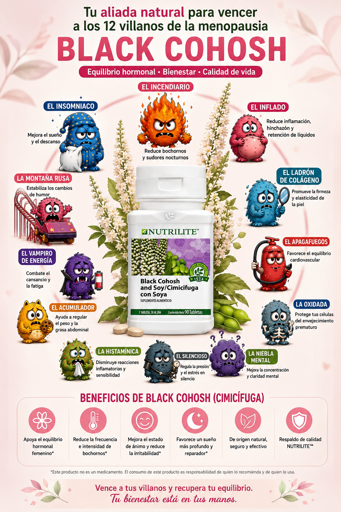

⭐
Mi Ruta de Activación
DESCUBRE → CONECTA → ACOMPAÑA → COMPARTE → ACTÍVATE → MULTIPLICA.
DESCUBRE → CONECTA → ACOMPAÑA → COMPARTE → ACTÍVATE → MULTIPLICA.
Lo que necesito aprender para recorrer mi Ruta.
Tests, Alianzas y apoyo nutricional.
Recursos para ampliar conocimiento y criterio.
Textos y recursos listos para iniciar conversaciones.
Quién soy, qué estoy logrando y cuál es mi siguiente paso.
Queremos conocerte antes de comenzar tu recorrido.
Empiezo conmigo. Comprendo mejor lo que estoy viviendo.
Reconozco mi historia. Pongo palabras a lo vivido y aprendo a escuchar.
Puedes seguir aprendiendo o cambiar tu objetivo.
Acompaña a 3 mujeres: escucha, orienta y conecta, sin diagnosticar ni prescribir.
Creo comunidad: invito, participo en una sesión y doy seguimiento.
Puedes continuar cuando quieras.
Aprendo haciendo y empiezo a generar movimiento.
Ayudo a otra mujer a comenzar y empiezo a crear comunidad.
Diferentes especialistas que hablan sobre el tema desde diferentes ángulos.
ESCUCHAR →Jen Gunter. Lectura de formación para profundizar en menopausia y fortalecer criterio.

Un recurso para conocer mejor la cimicífuga durante la menopausia.
Black Cohosh es un ingrediente botánico utilizado principalmente como apoyo en síntomas vasomotores como bochornos y sudoraciones. La infografía forma parte del universo educativo de los Villanos; no significa que trate por sí solo a los 12 Villanos.
Son una forma sencilla de poner nombre a lo que se siente. No son diagnósticos.
Antes: invita, confirma y prepara materiales.
Durante: recibe, comparte tu historia, facilita el Test y escucha.
Después: da seguimiento en las siguientes 24 horas.
Hace preguntas, quiere aprender, comparte el tema o pregunta cómo participar.